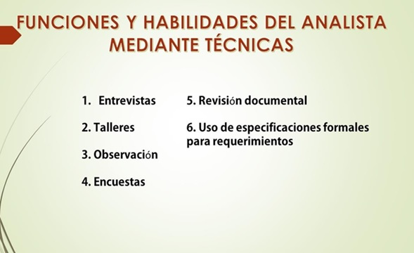
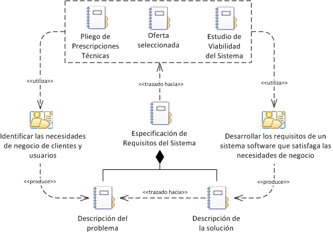
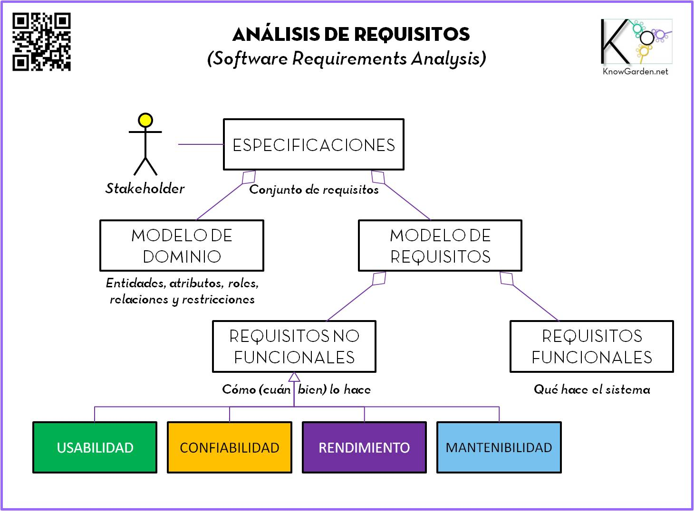
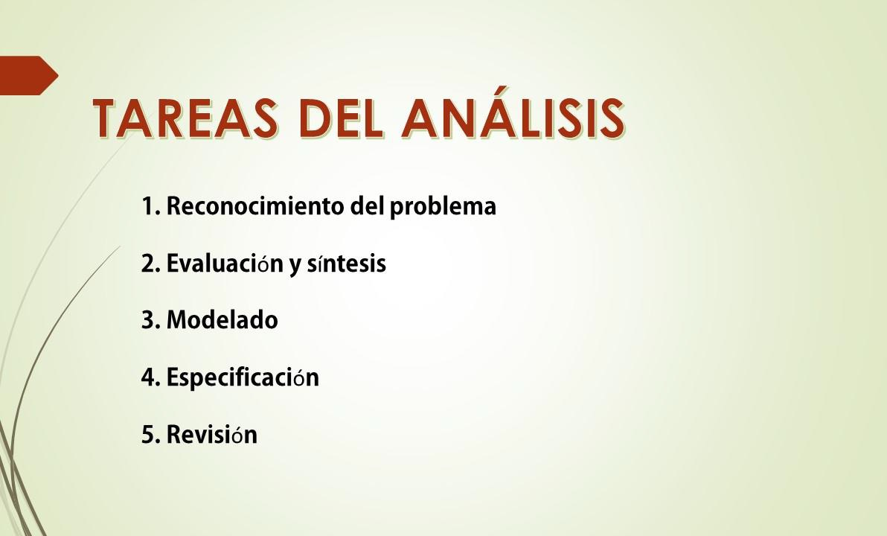

Analisis y especificaciones para el desarrollo del software
Identificar el concepto de analisis y el desarrollo de software y sus conceptos
Tareas del Analista
Funciones y Habilidades del analista

La especificacion de requisitos de software
 es una descripción completa del comportamiento del sistema que se va a desarrollar. Incluye un conjunto de casos de uso que describe todas las interacciones que tendrán los usuarios con el software.
Analisis de Requisitos del Desarrollo de software
La ingeniería de requisitos del software es un proceso de descubrimiento, refinamiento, modelado y especificación. Se refinan en detalle los requisitos del sistema y el papel asignado al software.
Tanto el desarrollador como el cliente tienen un papel activo en la ingeniería de requisitos – un conjunto de actividades que son denominadas análisis – El cliente intenta replantear un sistema confuso, a nivel de descripción de datos,funciones y comportamiento, en detalles concretos.
Funciones y Habilidades del analista
La función principal de un analista del software es llevar a cabo las actividades necesarias para cumplir con las cinco áreas de esfuerzo para ello se puede hacer uso de las siguientes técnicas como son: Entrevistas,Talleres,Observación,Encuestas,Revisión documental, Uso de especificaciones formales para requerimientos(formatos estándar de documentos, UML, etc.)
Requisitos de software
Se podría definir como la descripción de los servicios y restricciones de un sistema de software, es decir, lo que el software debe hacer y bajo qué circunstancias debe hacerlo.
Tarea de Analisis
El análisis de requisitos del software se puede subdividir en cinco áreas de esfuerzo que son Reconocimiento del problema,Evaluación y síntesis, Modelado,Especificación


 Se podría definir como la descripción de los servicios y restricciones de un sistema de software, es decir,
Se podría definir como la descripción de los servicios y restricciones de un sistema de software, es decir,